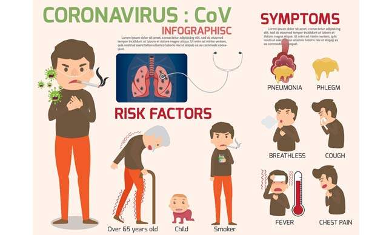

Les coronavirus forment une vaste famille de virus présents chez l’homme et chez l’animal. Ceux qui touchent l’être humain peuvent entraîner des manifestations diverses allant du simple rhume à des maladies plus graves comme le syndrome respiratoire du Moyen-Orient (MERS) et le syndrome respiratoire aigu sévère (SRAS). Le coronavirus le plus récemment découvert est à l'origine de la maladie à coronavirus COVID-19.
En cas de symptômes discrets, par exemple une toux ou une fièvre légère, il n’est généralement pas nécessaire de consulter un médecin. Restez chez vous, isolez-vous et surveillez l’évolution des symptômes. Suivez les instructions nationales en matière d’auto-isolement. Cependant, si vous habitez dans une région où le paludisme ou la dengue sévit, il faut absolument consulter un médecin en cas de fièvre. Quand vous allez dans un établissement de santé, portez un masque, restez à une distance d’au moins 1 mètre des autres personnes si possible et ne touchez pas les surfaces avec les mains. Aidez les enfants malades à suivre également ces conseils. En cas de difficultés à respirer ou de douleur/d’oppression dans la poitrine, consultez immédiatement un médecin. Si possible, appelez d’abord votre médecin afin qu’il puisse vous orienter vers l’établissement de santé le plus adapté.
La réponse actuelle de l’UNICEF consiste à soutenir le Gouvernement chinois et les pays de la région de l’Asie de l’Est et du Pacifique où ont été signalés la plupart des cas de COVID-19 jusqu’à présent. Depuis le 29 janvier, l’UNICEF a acheminé 13 tonnes de fournitures par avion, notamment des combinaisons de protection, des masques, des lunettes de protection et des gants pour les agents de santé. D’autres envois sont prévus et l’UNICEF prépositionne des fournitures dans des endroits stratégiques. Compte tenu de la nature imprévisible du virus et de sa propagation continue, l’UNICEF travaille également avec des gouvernements, l’Organisation mondiale de la Santé et d’autres partenaires afin de mettre en place des plans de secours dans d’autres régions, en particulier dans les pays qui disposent d’un système de santé plus faible et de capacités limitées pour affronter de grandes épidémies. Le 17 février, l’UNICEF a lancé un appel de 42,3 millions de dollars É.-U. afin d’intensifier les efforts visant à contenir l’épidémie de COVID-19. Les premiers fonds soutiendront les activités de l’UNICEF pour enrayer la transmission du virus, notamment en renforçant la communication relative aux risques et en luttant contre la désinformation afin que les enfants, les femmes enceintes et leur famille sachent comment prévenir la propagation de la COVID-19 et vers qui se tourner pour obtenir de l’aide.
Pour plus d'information sur le COVID-19 veillez consulter le site de l'OMS
Les symptômes de la COVID-19 sont les suivants :